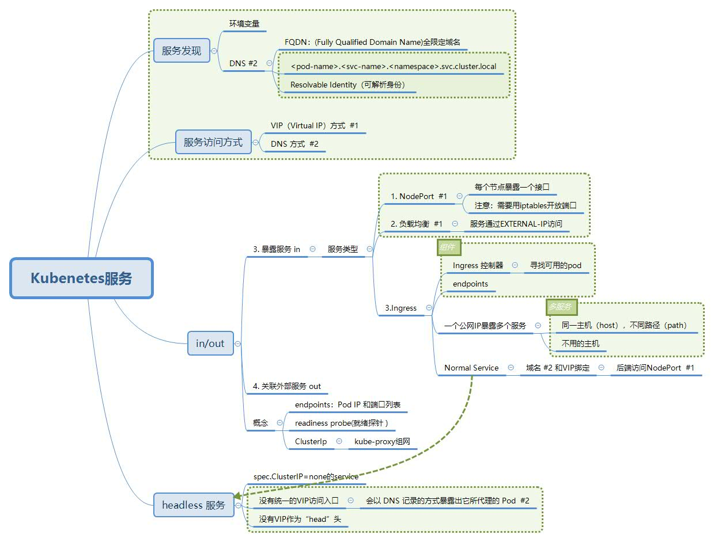

一. Kubenetes服务 #

 Kubernetes服务发现架构
Kubernetes服务发现架构
- ClusterIP 模式的 Service: 稳定的 IP 地址，即 VIP. ClusterIP是VIP, 虚拟IP.
- Headless Service: 稳定的 DNS 名字, 名字是通过 Pod 名字和 Service 名字拼接出来.
1.1 服务对外暴露方式 #
- NodePort 四层

- 一定要对流出的包做 SNAT操作[2][6]
client
\ ^
\ \
v \
node 1 <--- node 2
| ^ SNAT
| | --->
v |
endpoint
- 获取真实客户端IP, 设置Service 的 spec.externalTrafficPolicy 字段设置为 local，[2][6]
client
^ / \
/ / \
/ v X
node 1 node 2
^ |
| |
| v
endpoint
- Service LoadBalancer 四层

LoadBalancer类型的Service被提交后，Kubernetes就会调用CloudProvider[5]在公有云上为你创建一个负载均衡服务，并且把被代理的 Pod 的 IP地址配置给负载均衡服务做后端.
-
ExternalName ExternalName 类型的 Service，其实是在 kubedns里为你添加了一条 CNAME 记录. 1.7 之后支持的一个新特性.
-
Ingress Controller 七层


- Ingress 服务: 全局的、为了代理不同后端 Service 而设置的负载均衡服务.
- Ingress 对象，其实就是 Kubernetes 项目对“反向代理”的一种抽象。
- Ingress Controller: Nginx、HAProxy、Envoy、Traefik
Ingress controller
为了使 Ingress 正常工作，集群中必须运行 Ingress controller。 这与其他类型的控制器不同，其他类型的控制器通常作为 kube-controller-manager 二进制文件的一部分运行，在集群启动时自动启动。 你需要选择最适合自己集群的 Ingress controller 或者自己实现一个。
- Kubernetes 当前支持并维护 GCE 和 nginx 两种 controller
- F5（公司）支持并维护 F5 BIG-IP Controller for Kubernetes
- Kong 同时支持并维护 社区版 与 企业版 的 Kong Ingress Controller for Kubernetes
- Traefik 是功能齐全的 ingress controller（Let’s Encrypt, secrets, http2, websocket…）, Containous 也对其提供商业支持。
- Istio 使用 CRD Gateway 来 控制 Ingress 流量。
1.2 通过DNS发现服务 #
每个Service对象相关的DNS记录有两个： {SVCNAME}.{NAMESPACE}.{CLUSTER_DOMAIN} {SVCNAME}.{NAMESPACE}.svc.{CLUSTER_DOMAIN}
root@kubia-9nvx7:/# cat /etc/resolv.conf
nameserver 172.17.0.2
search default.svc.cluster.local svc.cluster.local cluster.local
options ndots:5
（1）拥有ClusterIP的Service资源，要具有以下类型的资源记录
A记录：<service>.<ns>.svc.<zone>. <ttl> IN A <cluster-ip>
（2）Headless类型的Service资源，要具有以下类型的资源记录
A记录：<service>.<ns>.svc.<zone>. <ttl> IN A <endpoint-ip>
（3）ExternalName类型的Service资源，要具有CNAME类型的资源记录
CNAME记录：<service>.<ns>.svc.<zone>. <ttl> IN CNAME <extname>.
1.3 ClusterIP模式的yaml配置 #
Service（接口声明） + Deployment（ endpoint 接口实现）
二. Kubenetes服务工作原理 #
- Service是由kube-proxy组件，加上iptables来共同实现的。
- kube-proxy的作用: 网络配置
2.1 kube-proxy #
userspace 代理模式 #
 userspace 代理模式
userspace 代理模式
iptables Proxy Mode #
 Iptables Proxy Mode
Iptables Proxy Mode
-A OUTPUT -m comment --comment "kubernetes service portals" -j KUBE-SERVICES
# 访问10.107.54.95后跳转到KUBE-SVC-4N57TFCL4MD7ZTDA链
-A KUBE-SERVICES -d 10.107.54.95/32 -p tcp -m comment --comment "default/nginx: cluster IP" -m tcp --dport 80 -j KUBE-SVC-4N57TFCL4MD7ZTDA
# 随机转发的目的地，分别是 KUBE-SEP-UZXILYFQQ2IZUWN5 和 KUBE-SEP-43IWXJI557JKCKCF
-N KUBE-SVC-4N57TFCL4MD7ZTDA
-A KUBE-SVC-4N57TFCL4MD7ZTDA -m statistic --mode random --probability 0.50000000000 -j KUBE-SEP-UZXILYFQQ2IZUWN5
-A KUBE-SVC-4N57TFCL4MD7ZTDA -j KUBE-SEP-43IWXJI557JKCKCF
## DNAT到pod的ip和端口
-A KUBE-SEP-UZXILYFQQ2IZUWN5 -p tcp -m tcp -j DNAT --to-destination 172.17.0.4:80
-A KUBE-SEP-43IWXJI557JKCKCF -p tcp -m tcp -j DNAT --to-destination 172.17.0.5:80
IPVS proxy mode #
IPVS是LVS一个组件，提供高性能、高可靠性的四层负载均衡器。IPVS 是IP Virtual Server的简写。IPVS构建在netfilter上，作为Linux 内核的一部分，从传输层实现了负载均衡。
与iptables类似，ipvs基于netfilter 的 hook 功能，但使用哈希表作为底层数据结构并在内核空间中工作。这意味着ipvs可以更快地重定向流量，并且在同步代理规则时具有更好的性能。此外，ipvs为负载均衡算法提供了更多选项，例如：
rr：轮询调度
lc：最小连接数
dh：目标哈希
sh：源哈希
sed：最短期望延迟
nq： 不排队调度
参考: #
- 深入理解 Kubernetes之：Service good
- 第14 章 ： Kubernetes Services 阿里
- 《Kubenetes in Action》 七牛容器云团队
- Kubernetes中的服务发现机制与方式 马永亮
- 从 K8S 的 Cloud Provider 到 CCM 的演进之路 毛宏斌 百度
- 获取真实客户端IP
- 华为云在 K8S 大规模场景下的 Service 性能优化实践 未
- Service jimmysong
- Ingress jimmysong
《深入剖析Kubernetes》 张磊